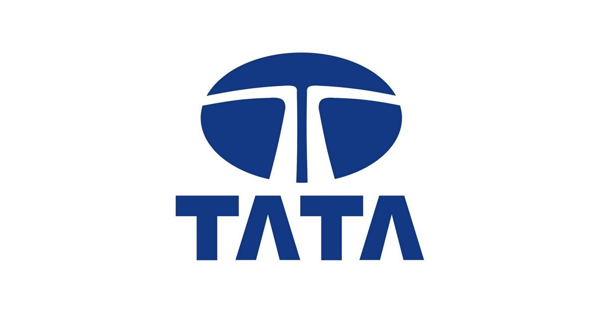

I am Kosisochukwu Mbachu-Igwe, a passionate data professional specializing in machine learning and data analytics
My expertise spans the entire data lifecycle, from collecting diverse data through scraping to deploying models. Key feature of my background is my skill in ensuring accuracy and reliability of datasets through effective data cleaning, advanced analytical techniques such as machine learning, time series analysis and regression analysis. Additionally, I possess expertise in developing user-friendly applications, presenting insights through tools such as Tableau, and have a strong foundation in SQL.
The Random Forest model was utilized to predict customers likely to churn, enabling me to proactively address potential losses as the risk to mitigate churn is by 20%
Marketing analysis was conducted using Tableau and dashboard to unveil useful insights that could help the Marketing department optimize resources allocation for targeted marketing.

Business framework was conducted and data analysed using Tableau to create effective insights. This enabled the senior management gain insights into the company's performance and identify its core strengths.

Data science and analytics skills are employed to collect data, explore the data, perform analysis, create visualizations, and generate insights critical to Nigeria
 Data analysis were performed from the data retrieved from all three branches of the top supermarket in Nigeria, to gain insights and improve customer retention.
Data analysis were performed from the data retrieved from all three branches of the top supermarket in Nigeria, to gain insights and improve customer retention.